AIR CONDITIONING CASING AND COMPONENTS
- Path
- Descriptions > 50 AUXILIARY UNITS > 5040 AIR CONDITIONING CASING AND COMPONENTS > AIR CONDITIONING CASING AND COMPONENTS
- Kind
- system description
- Applies to
- all engines; all production periods
- Interactive page
- https://sloeber94.github.io/elrnDB-fCrm/en/#/194001899
Applies to: all engines; all production periods
AIR CONDITIONING CASING
The air conditioning casing, in other words the plastic structure fastened to the dashboard supporting crossmember, is the same on both the manual and the automatic version.
The difference between the manual and automatic versions (as far as the air conditioning casing is concerned) lies exclusively in the type of mixture, distribution and recirculation flap movement actuators.
COMPONENTS
The components for the type of system are listed in the table below.
Components | MANUAL climate control | AUTOMATIC climate control |
|---|---|---|
DC actuators | X | X |
Stepping actuators | X | |
Mixed air temperature sensors | X | |
Heater radiator | X | X |
Evaporator | X | X |
Expansion valve | X | X |
Fan | X | X |
Climate control node | X | X |
Compressor | X | X |
Condenser | X | X |
Linear sensor | X | X |
Outside air temperature sensor | X | |
Passenger compartment air temperature sensor | X | |
Solar sensor | X | |
Pollen filter | X | X |
Drier filter | X | X |
Air quality sensor (AQS) | X |
Description of the components
The location of the main components is illustrated in the diagram below
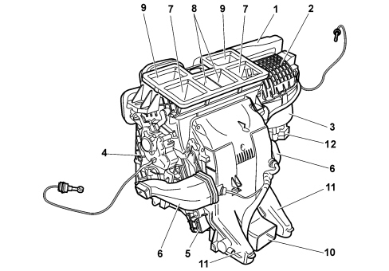
1 - outside air intake
2 - recirculation air intake
3 - electric fan
4 - evaporator
5 - heater
6 - FLOOR air outlets
7 - side VENT air outlets
8 - centre VENT air outlets
9 - DEF air outlets
10 - rear VENT air outlet
11 - rear FLOOR air outlets
12 - fan electronic control (automatic climate control)
13 - resistive divider (manual climate control)
The location of the sensors and the actuators is illustrated in the diagram below.
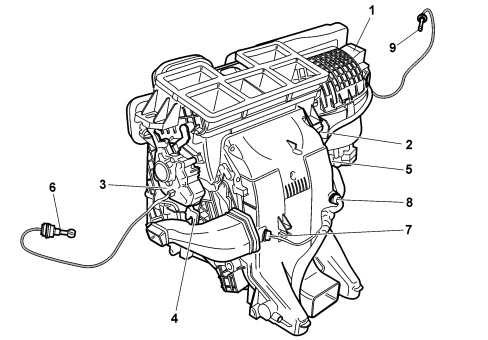
1 - recirculation actuator
2 - right side distribution actuator
3 - left side distribution actuator (on automatic version only)
4 - left side mixing actuator
5 - right side distribution actuator (on automatic version only)
6 - left side Vent treated air sensor (on automatic version only)
7 - left side Floor treated air sensor (on automatic version only)
8 - right side Floor treated air sensor (on automatic version only)
9 - right side Vent treated air sensor (on automatic version only)
ACTUATORS
The movement of the flaps inside the climate control casing, in other words the air mixing, distribution and recirculation flaps, takes place thanks to electro-mechanical actuators controlled by the NCL.
On the manual climate control versions, the actuators contain a motor with a 12 volt power supply that controls the rotary movement of a drive pin, by means of linkage, acting directly on the flaps. On the mixing and distribution actuators a potentiometer determines the effective position of the flap and acts as feedback for the control unit. The recirculation actuator does not require a potentiometer.
The actuator for the manual version is illustrated in the diagram below.
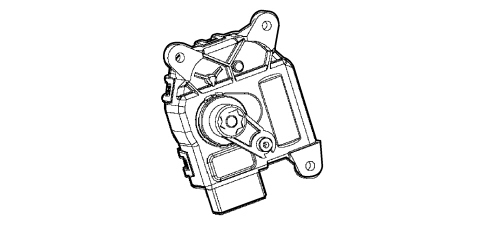
On the automatic climate control version the 12 Volt actuators for the distribution and the mixing are replaced by stepping motors which, by means of linkage or gears, control the rotary movement of a drive pin that acts directly on the flaps. In this case the positioning takes place by counting the number of steps required to reach the position. The recirculation has the same actuator as the manual version.
The stepping motor for the automatic version is illustrated in the diagram below.
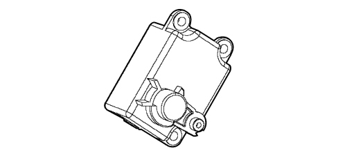
Air distribution actuator
The air distribution actuator operates the rotation of the distribution flaps by moving a cam that acts on an idler linkage for each flap.
On the manual climate control version it receives a 12 volt power supply and, by reversing the polarity, it can be made to rotate either clockwise or anti-clockwise. A potentiometer measures the effective position and acts as feedback for the control unit, checking the complete travel between the end of travel positions. It is fitted on the climate control casing on the right hand side.
On the automatic climate control version the actuator is replaced by a stepping motor. As the automatic version is the dual zone type, the mechanism that moves the flaps is on both the left and right sides of the climate control system. The movement of the flaps for the left and right sides is completely independent of one another. The positioning takes place by counting the number of steps required to reach the position.
Air mixing acuator
This actuator activates the rotation of the air mixing flaps by means of linkage. It is fitted on the climate control casing on the pasenger side.
On the manual climate control version it receives a 12 volt power supply and, by reversing the polarity, it can be made to rotate either clockwise or anti-clockwise. A potentiometer measures the effective position and acts as feedback for the control unit, checking the complete travel between the end of travel positions.
It is fitted on the climate control casing on the left side.
On the automatic climate control version the actuator is replaced by a stepping motor. As the automatic version is the dual zone type, the mechanism that moves the flaps is on both the left and right sides of the climate control system. The movement of the flaps for the left and right sides is completely independent of one another. The positioning takes place by counting the number of steps required to reach the position.
Recirculation actuator
The actuator manages the rotation of the flap in two extreme positions: dynamic (outside) air and recirculation, without intermediate positions.
It is fitted in the area of the dynamic air intake
It receives a 12 volt power supply and, by reversing the polarity, it can be made to rotate either clockwise or anti-clockwise.
CLIMATE CONTROL SENSORS
Mixed air temperature sensors
There are four temperature sensors on the automatic climate control casing that provide the climate control system control unit with a signal relating to the temperature of the air coming out of the vents. Two sensors are located by the FLOOR outlets and two others by the dashboard side vent outlets.
The sensors are the NTC type and feature a resistance of 10000 Ohm +/- 3% at a temperature of 25 °C
The temperature sensor is illustrated in the diagram below.
Solar sensor
The solar sensor is located on the top part of the dashboard at the base of the windscreen.
Its task is to transform the light signals (lux or kcal/m²h) into a corresponding linear electrical signal to supply a value proportional to the thermal energy introduced into the passenger compartment through the windscreen through the effect of the sun's rays.
This sensor is only fitted on the automatic climate control version.
The sensor is a special type of diode (photodiode) which can alter its conduction depending on the quantity of light coming into contact with it.
If the climate control system control unit (NCL) is managing the system in AUTO mode, it uses this signal and alters the air temperature and distribution parameters to maintain the temperature requested by the user.
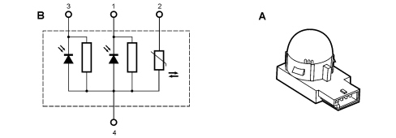
A - Solar sensor
B - Diagram showing operation of solar sensor
1 - Left solar sensor
2 - Temperature sensor (N.C.)
3 - Right solar sensor
4 - Earth
Pollution sensor (aqs)
The AQS sensor is an electronic device that is designed to send an opening/closing signal signal to the distributor unit recirculation flap when the outside air pollution index exceeds pre-set harmful levels to prevent polluted air from being introduced into the passenger compartment.
It is installed in the distributor unit outside air intake.
It is possible, through the use of a special sensitive element, to detect the presence, in the air surrounding the vehicle, of oxidizing pollutant particles (e.g. CO) or reducing agents (NOx).
The sensitivity of the system is improved by the potential danger of the pollutant gases according to the M.A.K. index (Maximal Concentration of Harmful Substances at Work Over 8 Hours).
The sensitive element is heated and regulated at a constant temperature of 300°C to supply the same performance in an ambient temperature range of between -40 and +85°C. It is not affected by the speed or the temperature of the air passing through it.
The AQS sensor is illustrated in the diagram below.
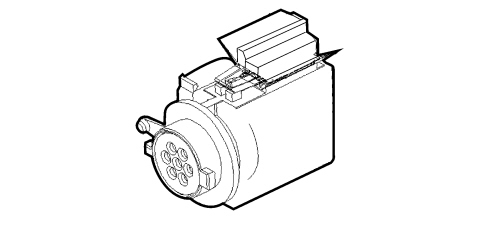
Pin out (3-way connector)
PIN | FUNCTION |
|---|---|
1 | Power supply +15 (INT) |
2 | Reference earth from NCL |
3 | PWM signal for NCL |
The sensor produces a PWM signal within around 40 secs from when it is first supplied.
PWM signal | Description of the signal |
|---|---|
0% | Short circuit to earth of the signal line |
20% | Non polluted air circulation |
20% | Level 1 pollution |
50% | Level 2 pollution |
60% | Level 3 pollution |
80% | Sensor error |
100% | Short circuit to +12V signal line |
If the AQS sensor has not been used for a long period its response time varies as described in the table later on.
Time not in use | Response time |
|---|---|
< 24 h | max 1 sec |
24 h < t < 76 h | max 30 sec |
76 h < t < 480 h | max 180 sec |
> 480 h | max 300 sec |
In order to check the operation of the sensor:
- turn the ignition switch ON;
- wait 36 secs for the sensor to warm up;
- within 120 secs, inject pollutant gas into the sensor using a spray canister (part. N° 71715571);
- check that the result of the test is positive using the diagnostic equipment (Examiner).
Outside air temperature sensor
It is an NTC sensor fitted on the bottom of the left door mirror (right on right hand drive versions).
It is only fitted on versions with automatic climate control.
It supplies a signal proportional to the temperature of the outside air.
It is connected to the driver's door control unit (NPG) which transmits the outside temperature signal via the CAN. The value transmitted via the CAN is always expressed in degrees °C.
The outside temperature should be measured with an accuracy of at least 0.5°C and with a tolerance of +/- 5%, including the tolerance of the sensor and the acquisition hardware.
The NCL uses this signal for the automatic control strategies.
If the data is missing or is not valid, the NCL uses the last valid figures and, after a period that can be adjusted, assumes a default value (which too can be adjusted in the EEPROM).
Depending on the outside temperature, the NQS warns the user of possible "ice danger" by means of a symbol and specific message.
The NQS only displays the outside temperature in °C.
The same is also valid for the NIT (Connect Nav+) if fitted.
To sum up, the sensor sends the outside temperature signal to the NPG which forwards it, via the B-CAN, to the NCL, the NQS and the NIT (if fitted) and to the Body Computer NBC. The latter, by means of the outside temperature signal gateway (from the B-CAN to the C-CAN), sends the signal to the NCM which gives the go ahead for the activation/deactivation of the compressor.
Passenger compartment air temperature sensor
This NTC type sensor has the task of notifying the climate control system management control unit of the temperature of the passenger compartment making the system able to correct the climate control parameters in order to respect the temperature set by the user.
This sensor is only fitted on versions with automatic climate control.
It is incorporated in the climate control system control unit and has a fan designed to prevent the build up of air inside it and make the temperature reading as consistent as possible.
EXPANSION VALVE
The tasks of this valve are to:
- Separate the high pressure circuit from the low pressure circuit;
- Expand the refrigerant (change in state from liquid to gas);
- Regulate the evaporation process (flow rate);
- Regulate the evaporation temperature;
- Protect the compressor from refrigerant fluid.
The thermostatic expansion valve is fitted on the evaporator inlet and outlet ducts with the task of regulating the flow and expansion (drop in pressure) of the R134a fluid before entry into the evaporator.
The automatic regulation of the size of the passage for the gas inside the expansion valve is produced by a sensitive bulb which measures the temperature of the refrigerant fluid and depending on this suitably adjusts the size of the opening that the gas passes through by means of a special spring that moves a shutter determining the extent of the expansion.
The increase in temperature at the evaporator outlet, detected by the bulb, ensures that the valve is opened with a consequent increase in the flow rate of the fluid in the evaporator.
Conversely, low temperatures involve a reduction in the size of the gas port determining a decrease in the flow of gas.
LINEAR PRESSURE SWITCH
The linear pressure switch (or linear sensor) controls the correct operation of the system thereby replacing the quadrinary (4 stage) pressure switch. By continuously analyzing the pressure of the climate control system circuit, the sensor provides the engine management control unit, in real time, with the variations in pressure making the management of the activation levels more flexible.
For each variation in pressure there is a corresponding voltage signal used by the engine management control unit to activate the fan speed and switch off the compressor if the pressure increases or decreases beyond the permitted limits (safety function).
The operating range of the linear sensor goes from 2.3 bar up to 27 bar according to the following pressure (bar) / output voltage percentage (%Vcc) curve.
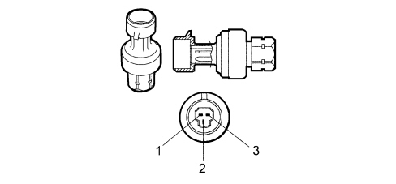
Pin out (3 pin connector)
PIN | FUNCTION |
|---|---|
1 | General earth from NCM |
2 | Power supply from NCM |
3 | Linear pressure signal |
The go ahead for the activation of the compressor and the adjustment of the fan speed, depending on the variation in pressure, takes place in this pressure range; the compressor is deactivated above and below these values for safety reasons to prevent damage to the system.
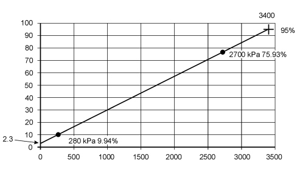
COMPRESSOR
Components and operation
The following compressors are fitted on the vehicle:
- 1.8 petrol, 2.2 petrol, 2.4 JTD version, SANDEN SD PXV16 type compressor
- 1.9 JTD 8v and 1.9 JTD 16v, SANDEN SD7V16 type compressor.
The capacity of these compressors varies starting from the maximum value which is gradually reduced following the load variations required by the system - changes in the outside temperature and/or humidity conditions or sudden changes in the engine load conditions.
This solution is defined as unlimited variable capacity.
The compressor is the alternating piston type: the variation in capacity is achieved through the inclination of the connecting rod carrier plate with a consequent variation in the piston stroke: the movement of the plate is activated by an internal regulation valve depending on the balance of pressure upstream and downstream of the compressor. In particular, a low intake pressure involves partialization of the compressor (reduced capacity), whilst a high pressure involves operation at maximum power (maximum capacity).
The main specifications of the compressors fitted are as follows:
SD PXV16 | SD 7V16 | |
|---|---|---|
Direction of rotation | Clockwise | Clockwise |
No. of cylinders | 7 | 7 |
No. of continuous revs | 8000 | 7000 |
Max no. of revs | 9200 | 8000 |
Max capacity | 163 cm³/rev | 161.3 cm³/rev |
Min capacity | 5.5 cm³/rev | 8.1 cm³/rev |
The compressor is shown diagramatically below and comprises seven pistons (2) with the connecting rods (3) fastened to a connecting rod carrier plate (4). The rotary motion of the plate (4), fitted on the shaft (5) provides the alternating motion for the pistons.
If the plate is inclined at a different angle, this allows the variation of the capacity: maximum inclination (as shown in the diagram) for maximum capacity; inclination at zero limit (vertical position) for minimum capacity, almost zero.
The rotation of the plate (4) takes place around the pin (6) hinged on the shaft (5) arm (7).
The movement of the plate (4) in relation to the shaft (5) takes place by means of splining in a low resistance material.
The plate (4) slides below on a guide (9) by means of a low friction material slide (8).
The diaphragm valve (1) controls the flow rate adjustment depending on the difference between Pa (intake pressure) and Pi (pressure inside the compressor).
The solution adopted for this compressor is that of always keeping the internal pressure Pi constant with advantages in terms of ease of adjustment, quietness and smooth operation.
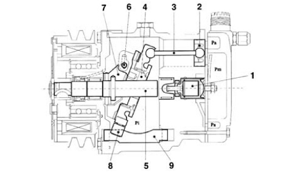
1, Diaphragm valve
2, Pistons
3, Connecting rods
4, Connecting rod carrier plate
5, Shaft
6, Pin
7, Arm
8, Slide
9, Guide
Pa, intake pressure
Pi, pressure inside the compressor
Pm, supply pressure
Control of the capacity
The capacity is altered by means of the different inclination of the connecting rod carrier plate (1) produced by changing the balance in pressure, and consequently the forces, acting on the actual plate.
This balance is modified with the opening of the diaphragm valve (4) in accordance with the following logic:
- the valve (4) remains closed with high intake pressures (Pa): the reaction forces of the pistons P1 are mainly acting on the hinged (2) plate (1) which results in a clockwise movement M1 applied to the fulcrum of the plate which remains in the maximum inclination position.
- if the Pa falls, the difference in pressure astride the diaphragm causes the valve (1) to open: this gives rise to a thrust pressure on the shaft (3) which involves a resulting P2 which produces an anti-clockwise movement M2 that causes the rotation of the plate (4) towards a more vertical position, i.e. a gradual reduction in the capacity.
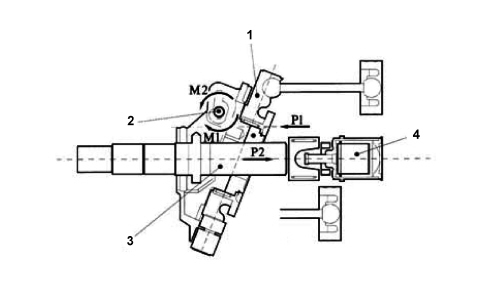
1, Connecting rod carrier plate
2, Fulcrum
3, Shaft
4, Diaphragm valve
QUANTITY OF OIL AND FLUID FOR THE CLIMATE CONTROL SYSTEM
With the introduction of HFC 134° (HydroFluoroCarbon) refrigerant, the traditional mineral oils used for climate control systems in previous years are not soluble in R134a so special synthetic type oils that can be mixed with this fluid must be used, namely: P.A.G. (Polyalkalineglycols).
They are oils produced through the atomization of alcohol with ethylene and propylene oxides. Since these oils are extremely hygroscopic, the oil containers and compressors must be kept well sealed to prevent oxidation with the humidity in the air; never use engine oils in their place.
Since the oil should circulate transported by the refrigerant throughout the entire A/C system, in order to be able to lubricate the expansion valve and the seals for the connectors as well and finally return to the compressor, the main characteristic of the oil should be that it dissolved in the refrigerant.
The compressor is supplied as spares pressurized with nitrogen to prevent the intake of humidity and impurirites; thefefore, when fitting, the plugs for the inlet and outlet connectors should be removed slowly with the compressor straight.
If the compressor is being replaced, proceed as follows:
1) Pour the quantity of oil present from the old compressor into a graduated test tube (C) taking care to let the contents drain thoroughly.
2) Pour the quantity of oil present from the new compressor into a graduated test tube (D) taking care to let the contents drain thoroughly.
3) Remove the excess quantity of oil (A) corresponding to the difference between the amount of oil in test tube (C) and test tube (B) (A = B - C).
4) Pour the amount of oil remaining in test tube (D) into the new compressor.
5) Quickly seal the P.A.G. oil container after use as it abosrbs humidity easily
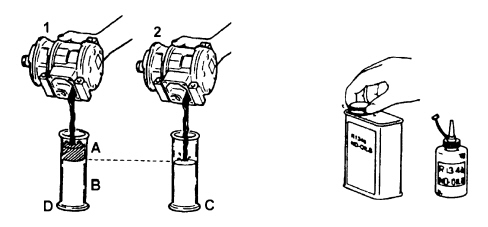
1 - New compressor
2 - Replaced compressor
TOPPING UP OIL IF THE COMPONENTS ARE REPLACED
A certain amount of oil circulates together with the refrigerant therefore, if components are being replaced, the quantity of oil required for the individual system must be replaced:
if the condenser is replaced, add 40 cc of oil;
if the evaporator is replaced, add 40 cc of oil;
if the drier filter is replaced, add 25 cc of oil;
if a pipe is replaced add 5 cm3 for each metre of pipe.
The oil used on systems operating on Freon 12 or R12 should never be confused with the type of oil used on systems running on R134a refrigerant.
The level of the oil in the compressor does not have to be checked periodically unless leaks have been noticed or there are breaks in the pipes or one of the components has to be replaced.
It should be remembered that with the circuit not working and at an outside temperature of 20 - 25 °C the pressure in the entire circuit is 5 - 6 bar which means that when the oil level needs to be checked the system should be drained to prevent the oil and the refrigerant from gushing out.
The table below summarizes the type and quantity of oil and refrigerant fluid.
Engine type | Compressor | Type of oil | Quantity of oil ( cm³) | Quantity of R134a gas (g) |
|---|---|---|---|---|
1.8 | SD PXV16 | SP10 | 120 ± 15 | 730 ± 40 |
2.2 | SD PXV16 | SP10 | 120 ± 15 | 730 ± 40 |
1.9 jtd 8v -1.9 jtd 16v | SD 7V16 | SP10 | 135 ± 15 | 730 ± 40 |
2.4 jtd | SDPX V16 | SP10 | 135 ± 15 | 730 ± 40 |
ELECTROMAGNET COUPLING OR PULLEY
The compressors that are used in automative type air conditioning systems are equipped with a special device, known as an electromagnet coupling, which allows the compressor and the engine to from one piece.
In this way, the coupling transmits the power, by means of suitable belts usually with a trapezoid section, from the engine drive pulley to the compressor.
When the air conditioning system is not working, the pulley runs in idle on the bearing, since it is always driven to rotate, by means of a trapezoid belt, by the pulley fitted on the crankshaft; the compressor, on the other hand, forms one piece with the hub.
When the air conditioning system is switched on, a magnetic field is created through the effect of the circulation of the current in the electromagnet. The force produced by the magnetic field ensures that the electromagnet attracts the disc on the pulley, which thereby forms one piece with the compressor shaft.
The latter is therefore driven to rotate.
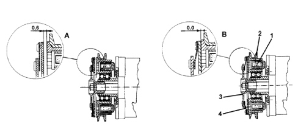
1 - Magnetic coil
2 - Pulley
3 - Front disc
4 - Spring
A) Rest fitting position
B) Working position for disc
Wiring diagram showing pulley electromagnet with diode in parallel to the coil for the reduction of the electromagnetic interference produced.
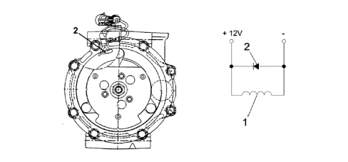
1 - Electromagnet
2 - Diode
The pulley always rotates (connected to the compressor shaft by a coupling) driven by the belt.
When the electromagnet is de-energized, the disc is about 0.6 - 0.8 mm from the pulley, therefore there is no transmission of movement from the pulley to the compressor. When the electromagnet (1) receives a power supply, the disc is attracted against the pulley, overcoming the force of an opposing spring.
CONDENSER
The condenser is a heat exchanger located in front of the engine coolant radiator.
Its task is to condense the refrigerant fluid, in other words transform it from a gaseous state to a liquid state.
The refrigerant fluid in a gaseous state passes through the condenser pipes and liquifies, on average, at a temperature of 60°C.
The air comes into contact with the condenser. When the vehicle is stationary or driving in traffic, the flow of air is produced by the engine radiator fan.
An insufficient thermal exchange in the condenser causes an increase in the pressure in the system and the incomplete condensation of the fluid thereby reducing the efficiency of the system.
DRIER FILTER
The drier filter is connected by means of apipe to the intake duct in the evaporator and filters the refrigerant, normally in a gaseous state but, to a very slight extent, in a liquid state and the lubricant oil/anti-freeze.
The small amounts of impurities that could block the expansion valve are trapped by two filtering layers. The retention of the water is guaranteed by molecular sieves or by a chemical compound (SILICAGEL). For this reason the components must be kept with the connectors sealed an in dry environments until the time of installation.
In the lower part of the shaped pipe, which is located behind the accumulator and is in contact with the outlet connector, there is an opening designed to ensure the return of the oil to the compressor. In addition there is a metal gauze filter by the oil port.
A section of the drier filter is illustrated in the diagram below.
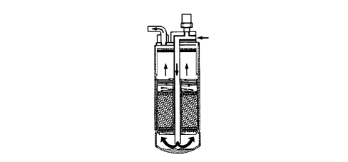
FAN
On the manual system, the fan is activated by the passenger compartment air speed selector which sends the signal to a resistive divider which produces the different speeds.
The resistive divider is fitted in the duct between the dynamic air intake and the unit to cool it.
The fan is illustrated in the diagram below.
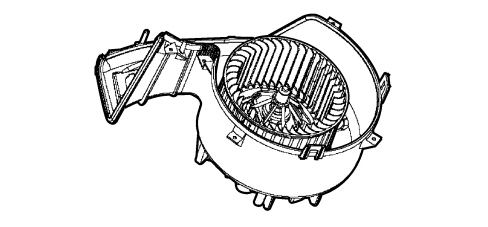
The resistive divider (for the manual climate control only) is illustrated in the diagram below.
In the automatic system the fan is operated by dedicated buttons in the control panel which send the signal to the Climate Control Node which produces different voltage values for the different speeds.
The fan for the automatic version with a speed governor is illustrated in the diagram below.
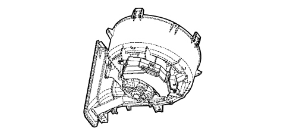
POLLEN FILTER
The pollen filter is designed to filter the outside air entering the passenger compartment.
It is located in the compartment under the windscreen and can be replaced by removing the special access flap.
The filter is fitted on both the manual version and the automatic version of the climate control system.